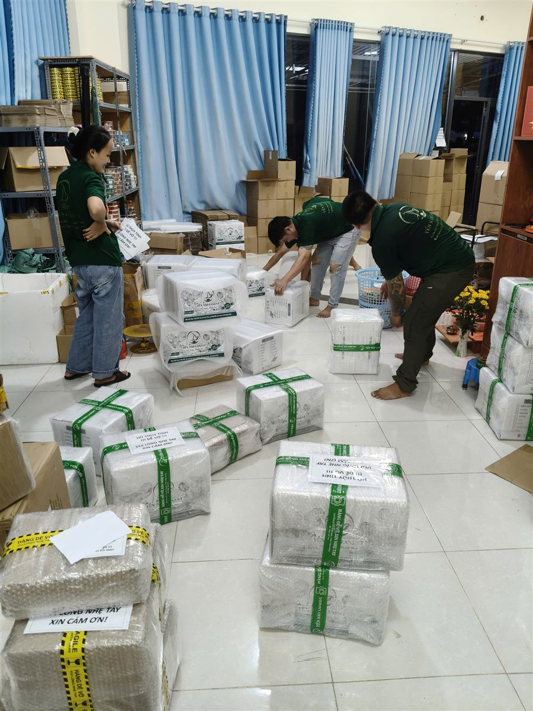

Mỗi hộp yến đều có một người đứng sau. Với câu chuyện thương hiệu yến sào Lanest, người đó là chị Lê, người sáng lập Lanest, một người từng thất nghiệp ở Cam Ranh, bán yến lai rai, rồi đi tới đội thợ riêng và hơn 200 đại lý. Bài này kể lại hành trình ấy bằng chính lời chị, giữ nguyên cách chị nói.
Cửa hàng Yến Sào Lanest tại Khu đô thị Căn Cứ Cam Ranh, những kiện hàng chuẩn bị đi đại lý
1. 2017: những đơn yến đầu tiên
Năm 2016, chị Lê chuyển về sống hẳn ở Cam Ranh, Khánh Hòa. Năm 2017 chị tốt nghiệp đại học, sinh con gái đầu lòng và chưa có công việc nào. Cơ duyên với yến đến từ chính gian bếp nhà mình:
"mình cơ duyên mà mình đến với ngày Yến là mình cảm thấy nó ờ mình gia đình mình sử dụng và mình cảm thấy là nó tốt cho sức khỏe nên là mình muốn theo cái ngày này."
Thời đó chị lấy yến qua tay người khác để bán, số lượng rất ít, còn thu nhập chính đến từ kinh doanh bất động sản. Nhưng cảm giác những đơn yến đầu tiên thì chị vẫn nhớ:
"những cái đơn hàng đầu tiên thì rất là vui cái cảm giác là mình mình bán được"
2. 2021: bước ngoặt từ một mùa dịch
Nghề yến chỉ trở thành nghề chính khi dịch Covid đến. Chị kể:
"Khi mà mình thấy dịch Covid á thì người ta mất nhiều quá. Người ta khi người ta bệnh á người ta mới quan tâm tới cái sức khỏe"
Từ suy nghĩ đó, chị muốn mọi người chăm lo cho mình từ lúc còn khỏe, thay vì đợi tới khi bệnh. Và chị chọn dứt khoát: "mình ngưng bất động sản và mình tập trung 100% thời gian" cho nghề yến.
3. Bài học 84 gram và quyết định tự làm
Những năm đầu, Lanest vẫn nhập yến từ đơn vị khác. Một lần chị đem 100g yến tinh chế vừa nhập về ngâm ra rồi sấy khô lại để cân thử, và chỉ còn 84g. Điều làm chị day dứt không chỉ là bị lừa, mà là đã bán thứ hàng như vậy tới tay khách của mình. Chị gọi đó là:
"một cái bài học rất là lớn cho mình mà thay đổi luôn cái tư tư duy làm nghề của mình."
Từ năm 2023, Lanest có đội thợ riêng. Mỗi mẻ yến đi qua 4 chốt kiểm: thợ nhặt, thợ đảo lại, thợ đắp và nhân viên kiểm tra cuối. Không tẩy trắng, không độn tăng trọng lượng, hàng chưa đạt thì loại. Chi tiết anh chị xem ở bài bên trong xưởng yến Lanest.
4. Lên công ty: chọn làm đúng dù khó hơn
Ngày 07/12/2023, hộ kinh doanh chuyển thành Công ty TNHH Yến Sào Lanest. Lên công ty nghĩa là xuất hóa đơn đầy đủ, giấy tờ nhiều hơn, và có khách không quen với điều đó. Chị vẫn chọn:
"bên mình tâm niệm là bên mình sẽ làm đúng nhất có thể."
Sau đó là những mốc có giấy tờ: chứng nhận ISO 22000:2018 về hệ thống quản lý an toàn thực phẩm (9/2024), bản tự công bố sản phẩm kèm phiếu kiểm nghiệm (12/2024), và danh hiệu "Sản phẩm – Dịch vụ tốt nhất vì người tiêu dùng 2024" của Vietnam No.1 Brand Awards. Theo chị Lê, Lanest vẫn "hàng tháng đều tự gửi mẫu đi kiểm nghiệm thật."
5. Hơn 200 đại lý và một nguyên tắc ngược đời
Phần lớn sản phẩm Lanest đến tay người dùng qua đại lý và nhà phân phối. Chị Lê kể ngắn gọn: "Chị làm 3 năm có hơn 200 đại lý trực tiếp." Cách chị xây hệ thống ấy có một nguyên tắc nghe rất ngược:
"mình có một cái nguyên tắc là mình sẽ không bán hàng cho những cái đại lý nào mà đã lấy hàng ở bên khác rồi... tức là mình không có mời chào."
Đại lý đến với Lanest vì tự tìm tới, không phải vì bị lôi kéo từ nơi khác. Và khi đã hợp tác, Lanest không bao giờ đụng tới khách hàng của đại lý, để đại lý yên tâm làm ăn lâu dài.

Đội kho Lanest đóng kiện, dán nhãn "hàng dễ vỡ" trước khi gửi đi các đại lý
6. Những điều Lanest không đánh đổi
Hỏi chị Lê điều gì không bao giờ đổi lấy lợi nhuận, chị nhắc lại bài học từ ba mẹ và người thầy: "giữ uy tín hơn giữ mạng". Với người làm, đó là chuyện giữ việc cho đội thợ ngay cả lúc thị trường khó:
"mặc dù là có những lúc nha là hàng tồn nè... thị trường nó khó khăn á... nhưng mà mình vẫn cố gắng là giữ giữ cái công việc cho những cái đội thợ làm nhà của mình"
Còn câu slogan "Trao sức khỏe – Trao yêu thương", chị giải thích nó đến từ một điều rất giản dị: "sức khỏe là một cái món quà quý giá nhất mà không có cái tiền nào mà có thể mua được". Muốn biết thêm về nơi Lanest bắt đầu, anh chị đọc bài yến sào Cam Ranh – Khánh Hòa.
Câu hỏi thường gặp
Yến Sào Lanest bắt đầu từ khi nào?
Chị Lê, người sáng lập Lanest, bắt đầu bán yến từ năm 2017 tại Cam Ranh. Ngày 07/12/2023, Công ty TNHH Yến Sào Lanest chính thức thành lập.
Lanest có tự làm yến không?
Từ năm 2023, Lanest có đội thợ riêng, mỗi mẻ yến qua 4 chốt kiểm trước khi đóng hộp, không tẩy trắng, không độn.
Tôi muốn làm đại lý Lanest thì liên hệ thế nào?
Anh chị gọi hotline 0258 6278 627 hoặc nhắn fanpage Yến Sào Lanest để được tư vấn chính sách đại lý.